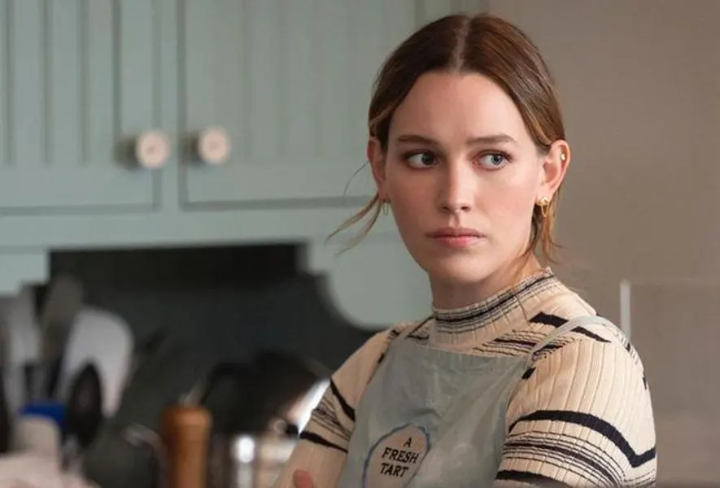
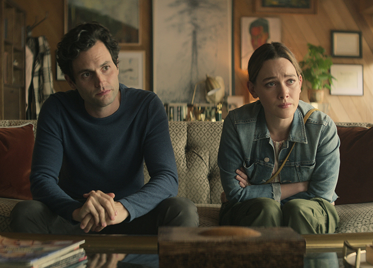
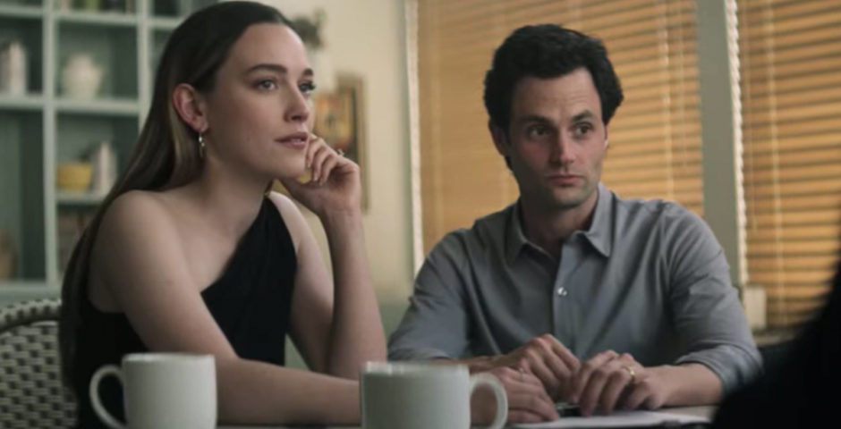
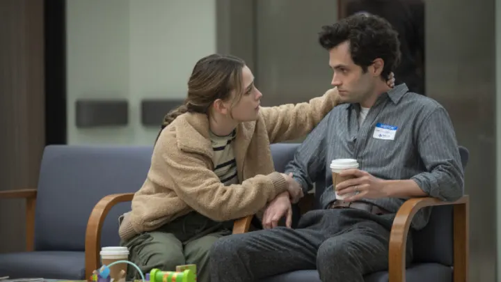

About Love Quinn

Who Love Is
Love Quinn is a complex, charismatic, and intense woman who shares Joe’s capacity for darkness while striving to build a meaningful life for herself and her family.
Love's Personality
Love is intelligent, emotionally perceptive, and fiercely loyal, blending warmth and empathy with a calculating and obsessive streak when her loved ones or ideals are threatened.

Love's Personality
Love’s personality is marked by a mix of warmth, intelligence, and intensity. She is perceptive and emotionally intuitive, able to read people and situations with sharp insight. Outwardly, she is charming, nurturing, and socially adept, making her appear approachable and trustworthy. Yet beneath this exterior lies a capacity for obsession and calculated action: she can manipulate situations and people to protect herself or her loved ones. Love balances her empathy with an almost strategic awareness of the consequences of others’ actions, which allows her to navigate complicated social and emotional landscapes effectively.
She is fiercely loyal and protective, especially toward family and those she loves, but this devotion can morph into possessiveness and control. Her intelligence and emotional depth make her both a strong partner and a dangerous adversary, as she is not afraid to confront or eliminate obstacles—moral or otherwise—that stand in her way.

Love's Relationships
Her relationships are defined by passion and intensity; she can be nurturing and devoted, but her obsessive tendencies and willingness to cross moral boundaries create volatile dynamics, especially with Joe.



Love's Relationships
Love’s relationships are intense, passionate, and often high-stakes. With Joe, she initially appears as an ideal partner: understanding, independent, and capable of seeing through his charm to his darker impulses. Unlike Beck, Love can reflect Joe’s obsession and even embrace it, creating a volatile but deeply connected bond. Their relationship oscillates between tenderness and danger, showing that Love both craves and challenges intimacy in ways Joe rarely encounters.
Her family relationships are central to her identity, particularly with her brother Forty, whose missteps and recklessness she often seeks to manage or contain. Love’s capacity for empathy and care extends to those she deems worthy, but she has little patience for betrayal or dishonesty. Her relationships, romantic or familial, are guided by a strong sense of justice as she defines it, which often leads her to take extreme actions. In the end, Love embodies both devotion and danger: she is capable of love that is passionate and nurturing, but also obsessive and destructive when circumstances demand it.